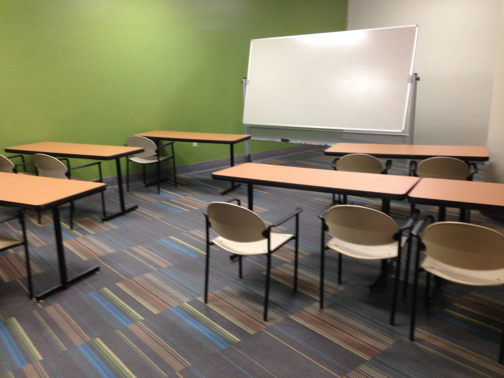
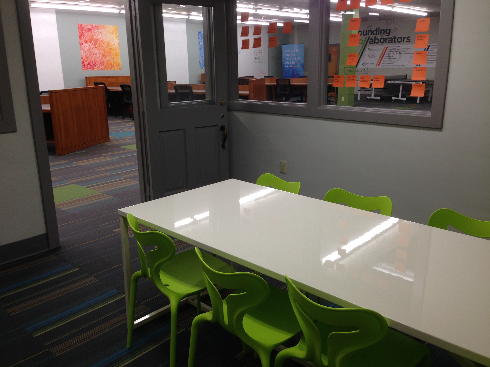
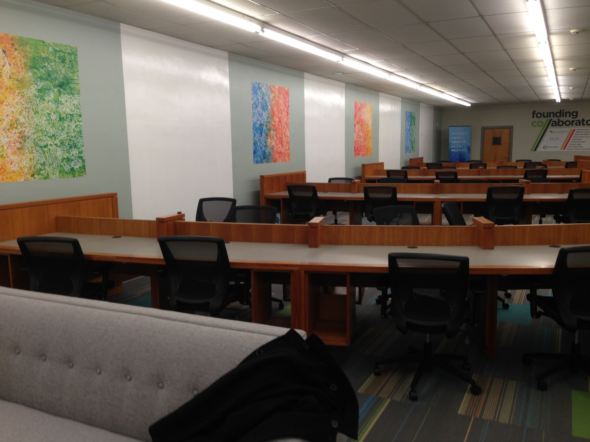

Co//ab has many facilities that are available for students and entrepreneurs to reserve. Co//ab has 4 types of rooms: the large classroom space, a social space at the front, and a small "clinic" space that can be used for sessions with one of Co//ab's many mentors.
Amenities of Co//ab include coffee available around the clock, the first North State fiber Internet business customer in downtown Greensboro, and mentoring from our professionals. Currently, we have three lawyers on our staff who are available to counsel early stage entrepreneurs in the steps necessary to get their new company off the ground.
Large Classroom Workspace
"Clinic" Space
"Desks